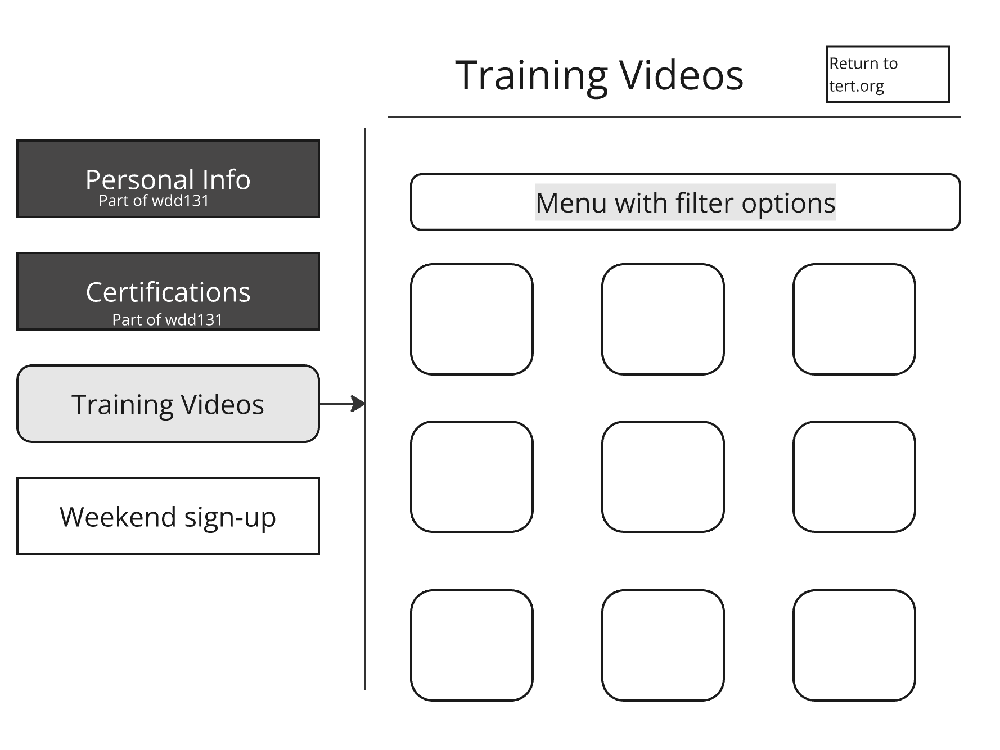
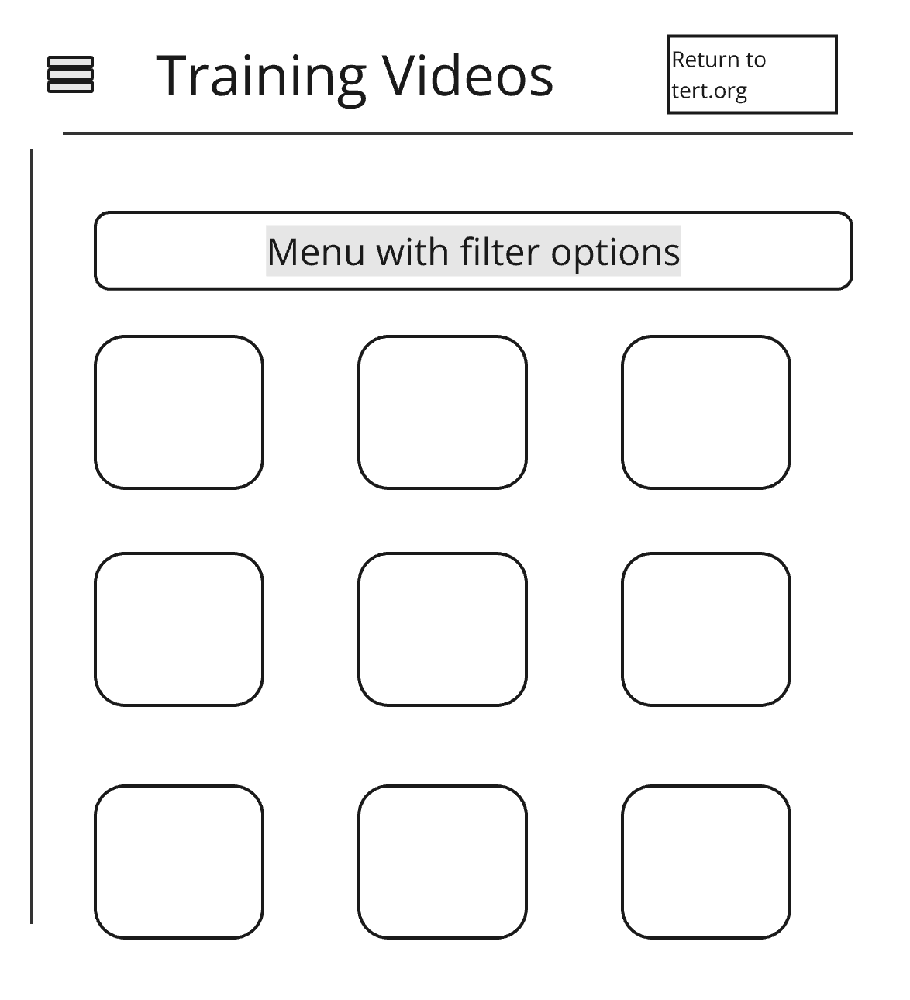
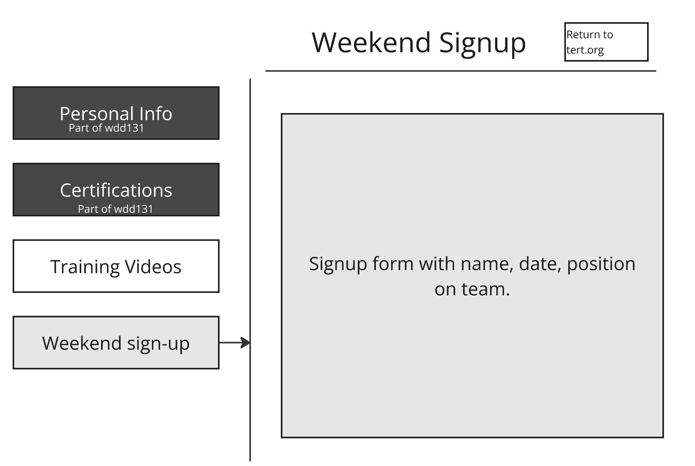
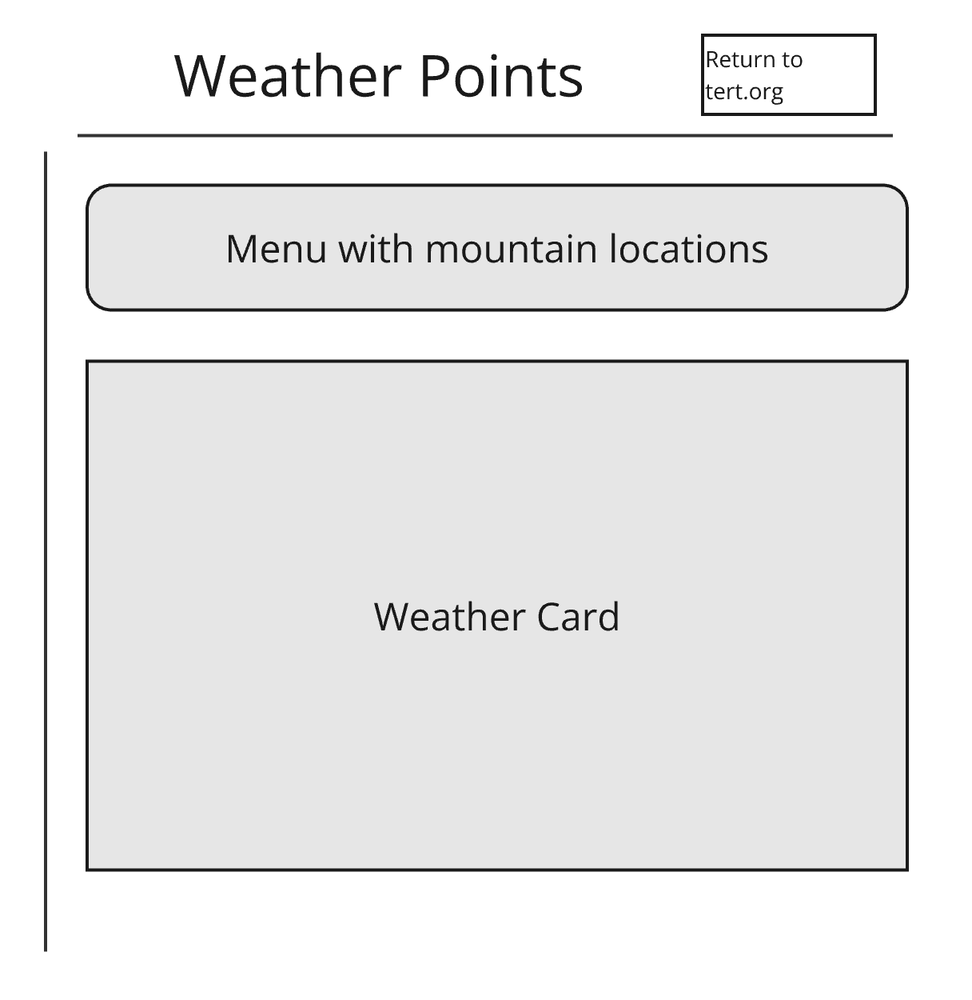
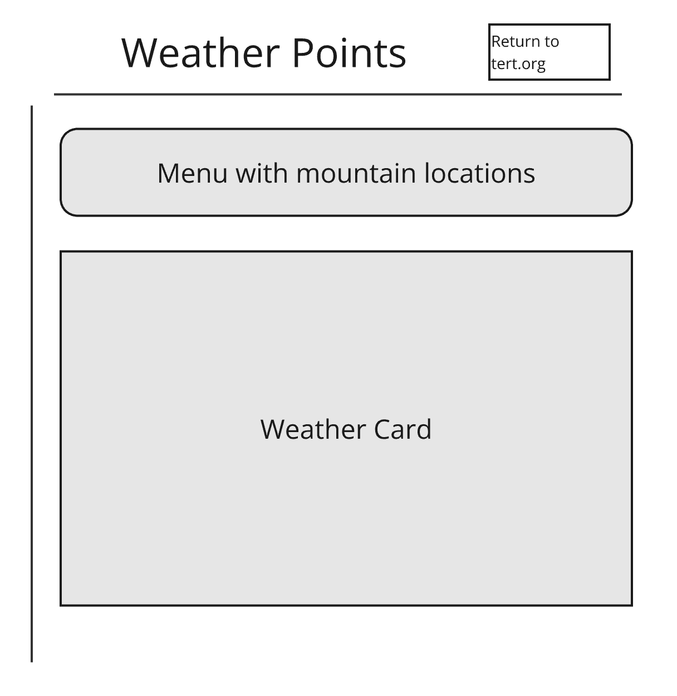
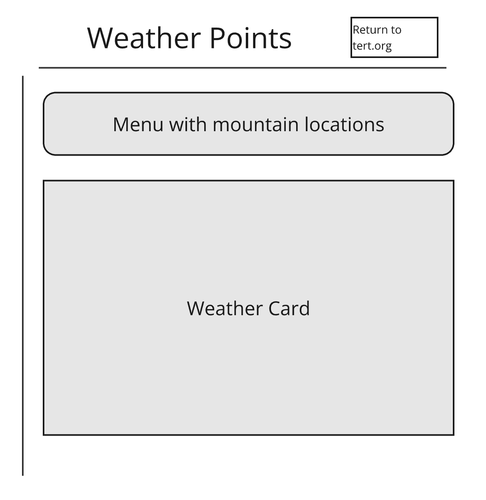

Site Purpose
TERT acts as an assistance to SAR (Search and Rescue) on Mount Timpanogos. Timpanogos sees exceptionally heavy hiker traffic at multiple points on the mountain. A number of fatalities resulted in volunteers working together to help provide quick assistance to hikers. This is a start to a probposed backend where members can update information. That is most of the scope of this project, though future projects will expand and include training videos, signups for weekends, and more.
Scenarios
- Where can I view training materials in general and specific to my assignent?
- Where can I sign up for a weekend?
- Where can I view weather reports for key points on the mountain?
Color Schema
Header and Footer:
- rgb(40,116,252) - Blue Background matched to TERT site
- #ffffff - White text
- #fcb900 - Amber
Body:
- #ffffff - White background
- #152750 - Dark blue text
- #fcb900 - Amber
Other elements:
- #fcb900 - Amber for buttons
- #152750 - Amber for mouse over links
Typography
- Inter
- Gupter
Wireframes



 

